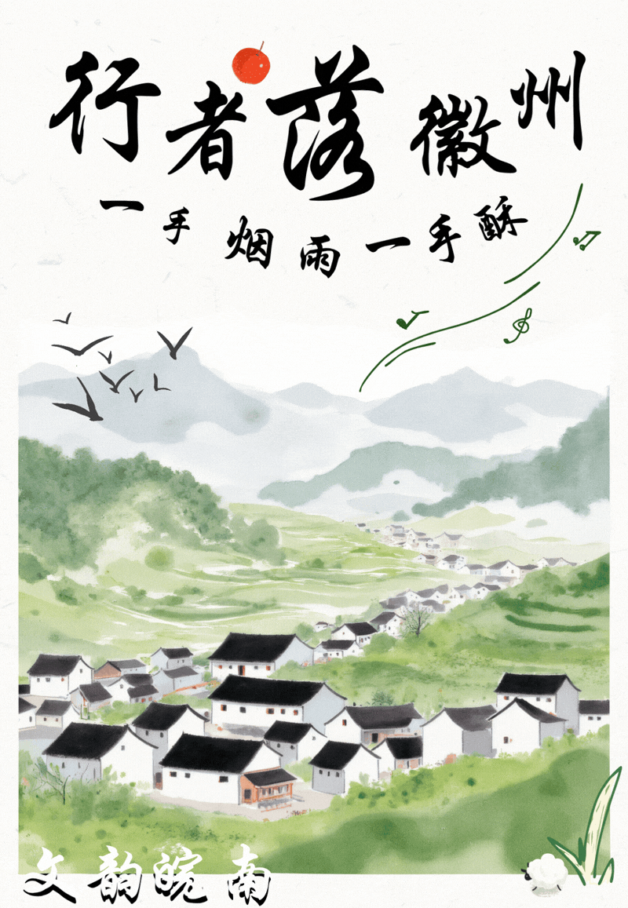
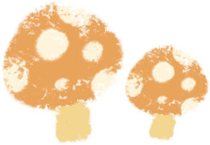
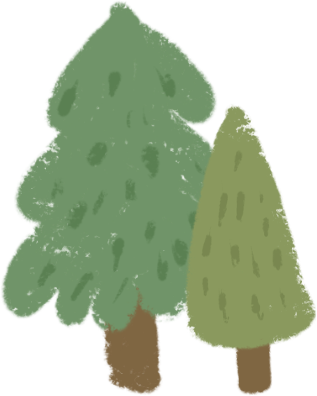
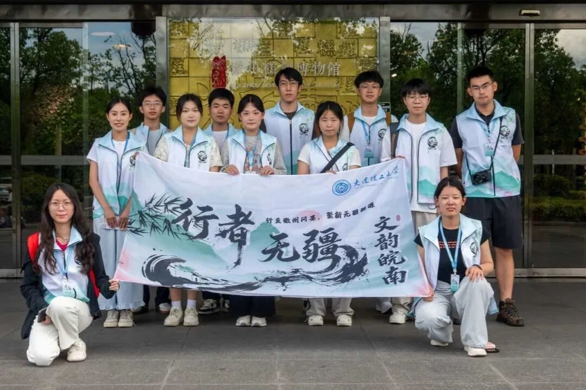
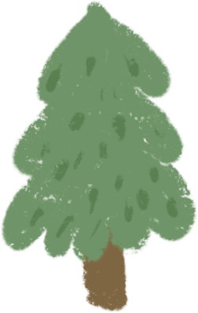
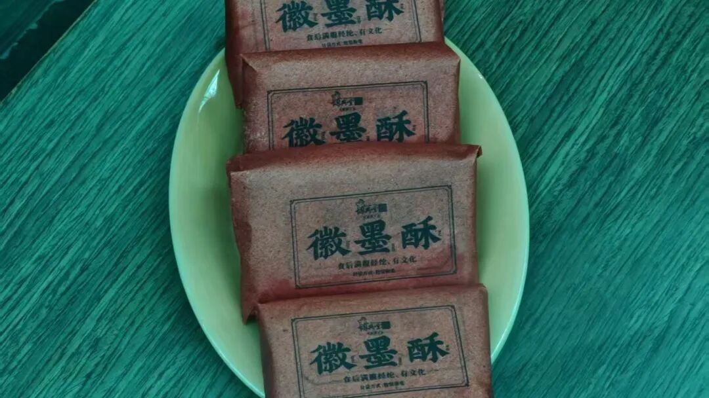

【行者无疆·文韵皖南】行者落徽州，一手烟雨一手酥


盛夏时节，行者无疆实践团奔赴黄山，开启了一场沉浸式徽文化寻访之旅。我们穿行庄重文博展馆，溯源千年徽派文脉；俯身烟火糕饼工坊，体悟民间非遗匠心，在行走观察、聆听实践中，深挖非遗文化内核，探寻传统技艺中蕴藏的东方美育真谛。

《一馆览千年，文脉凝雅韵》


晨光清朗，微风拂面。走进安徽中国徽州文化博物馆，这座承载徽州千年记忆的博物馆，收纳了徽州地域从古至今的文明遗存，完整留存着徽文化的发展脉络与精神内核。跟随专业讲解员的细致解读，我们逐步褪去对徽文化的浅层认知，层层解锁藏在文物背后的历史底蕴与美学价值，缓缓推开属于古徽州的时光之门。
馆内万千遗存静立无声，有序陈列的徽商文书、徽州三雕石刻、名家书画卷轴、民俗生活器物、传统工艺标本，全方位勾勒出古徽州“耕读传家、贾而好儒”的地域精神与人文风貌。作为中华地域文化的重要标杆，徽文化融合了宗族礼制、商贾文化、传统工艺、民俗风情等多重内涵，其中徽派雕刻、书画艺术、古建营造技艺更是国家级非遗瑰宝。一木一雕藏匠人巧思，一纸一字见文人风骨，一器一物显民俗底蕴，千百年传承而来的礼制文化、手工技艺、人文思想，在此尽数沉淀。
件件文物封存千年徽韵，雕琢笔墨尽显儒商风骨。馆藏珍藏定格古时风雅匠心，沉淀而成的徽州文脉，并未被岁月封存，而是化作绵长的精神养分，滋养着今人感知传统之美。
《一饼载烟火，巧手悟匠心》
告别书卷古韵的文博殿堂，午后的实践行程奔赴烟火人间，团队走进徽州糕饼博物馆，解锁扎根市井、烟火气十足的饮食非遗之美。如果说博物馆的文物承载着徽州的人文高度，那么徽州糕饼技艺，则承载着徽州百姓的生活温度，是流传百年、活态传承的民间非遗项目。
在讲解员的细致科普下，我们了解了黄山烧饼的百年传承历史与文化渊源。黄山烧饼又名“蟹壳黄烧饼”，是徽州极具代表性的传统风味小吃，起源于古代徽州商旅文化。古时徽商常年奔走四方、经商远行，便于储存、口感酥香的烧饼成为徽商出行的必备干粮，陪伴徽商走遍山河、闯荡四方，见证了徽商兴衰起落，也融入了徽州百姓的日常民俗与节庆礼仪。历经数百年迭代传承，黄山烧饼的古法制作技艺不断完善，成为徽州饮食非遗中极具生命力的代表，承载着独特的地域饮食文化与民俗记忆。


严肃品鉴
从食材甄选到古法工序，每一道流程都凝聚着代代匠人的经验与巧思。大家跃跃欲试，挽起衣袖亲手体验烧饼制作，揉面团、包馅料、压饼形，指尖感受面团的温度，体会手工技艺独有的分寸感。比起馆藏文物的庄重，饮食非遗更贴近人间日常。一方糕饼，是烟火里生长出来的传承。我们真切体悟到：非遗从不止于宏大的历史遗存，寻常风味、市井手艺之中，同样蕴藏朴素真挚的生活美育。
《步履寻大美，青年续新声》
一座馆藏
收纳千年徽州厚重过往
一枚糕饼
裹住寻常万家人间烟火
朝夕走马一程路
撞见两样山河模样
庙堂文博肃穆，撑起徽州文脉风骨
市井饼食温热，托住百姓日常烟火
非遗从不是被尘埃封存的旧时光
生生流转，温润世人心底
岁岁绵延，涵养一方审美风骨
点击翻看行者烧饼精彩瞬间
▼
行者无疆
来源 | 行者无疆实践团
图片 | 行者无疆实践团
文字 | 童思嘉
编辑 | 原羽佳 袁 婵
审核 | 闫 磊
责编 | 邹靓靓 周 亮